These days, we practice safe text, use commas and never miss a period, but it took a while to get there! Here’s a short history of (Latin) punctuation…
Ancient Rome and the Middle Ages for instance used “scriptio continua”, continuous writing where all words and sentences were glued together. New paragraphs started with a bar — the Greek word is “paragraphos”! — or a wedge (“diple”). To figure things out, people always read texts aloud. Silence did not reign in libraries in those days!
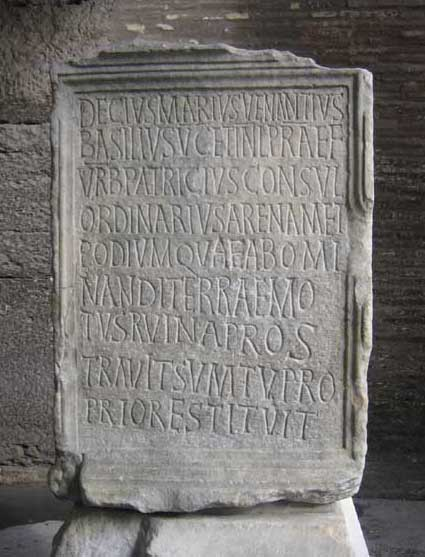 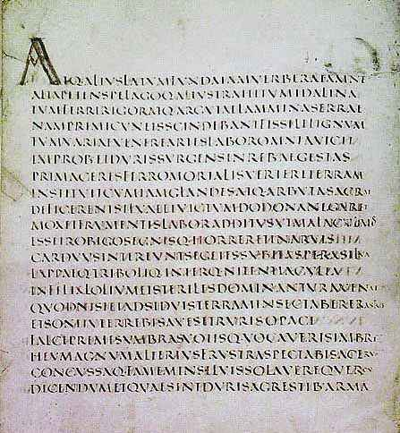
The punctuation system as we now know it is relatively new. Its history is long and complex, but many scholars tend to call modern punctuation largely a Renaissance invention; it was developed when the printing presses made it necessary.
The first form of punctuation was invented by the scholar and grammarian Aristophanes of Byzantium (257-180 BC), the head of the Library of Alexandria. He used a dot to indicate pauses. The Roman rhaetorists used the dot (called a “distinction”) at the height of the uppercase characters to indicate long pauses — a full stop if you will. A “media distinction” or “middle dot”, placed lower, indicated a shorter break. A “subdistinctio” allowed to indicate an intermediary pause.
It was only in the 7th century AD that the use of punctuation got widespread. Even then, only the dot — the full stop — was used. Charlemagne, Frankish emperor from 768 to 814, tried to revive intellectual life — this period would later be called the “Carolingian Revolution”. He asked the English scholar Alcuin of York to establish writing and punctuation rules. Alcuin proposed a low dot to indicate a short pause, a middle dot to mark a medium pause and a high dot to indicate a long pause. He also advocated the use of capitals to begin sentences — in the early Middle Ages all letters were caps! —, the use of spaces between the words and the segmenting of text into sentences and paragraphs.)
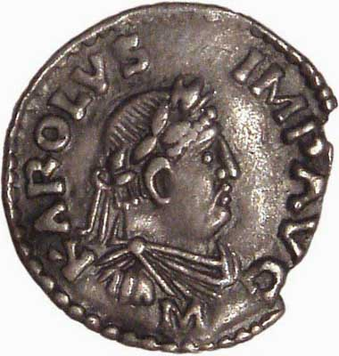
Further progress didn’t come until 7 centuries later with the Venetian printer and typographer Aldus Manutius. He invented the full stop or period (.), the semicolon (;) and the colon (:). Aldus Manutius also published a book on punctuation, “Interpungendi Ratio”.
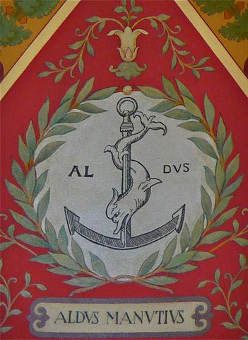 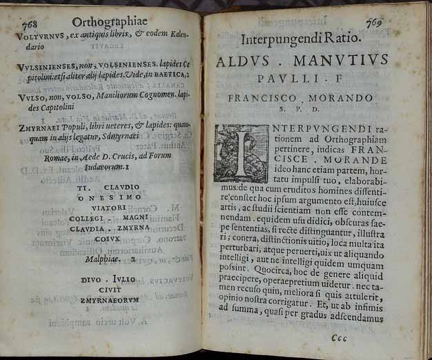
The original contribution of Aldus was that punctuation for him was part of a language’s syntax, of the grammar, whereas before him it was simply a matter of elocution — where does one add pauses?
(Not that his symbols had their current significance: he replaced the lower dot by a slash (“/”), the colon (“:”) was used to end a sentence, the full stop (“.”) ended a paragraph. The semi-colon (“;”) had three functions — it functioned as a semi-colon does today, ended sentences and operated as a comma.)
Until 1550 each printer maintained his own style that was characterized by the minor punctuation symbols and special symbols used — the major punctuation symbols (dot, comma, question mark and exclamation) everybody agreed upon by then…
Let’s give an example: the “+” sign. For more than a thousand years, people had used the Egyptian symbol 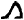 — a male figure that runs towards you — to add, and the symbol 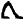 — a male figure that runs away — to subtract. In 1543, Robert Recorde, a Welsh physician and a popular writer of mathematics handbooks, tried to introduce the “+” sign that had already gained some popularity on the European continent in England.
That book failed, but in 1557, Robert Recorde tried again by introducing the equal sign (“=”) he had found in old books on logic to the world. His book “The Whetstone of Witte”, the first English book on algebra, arguments the case: “And to auoide the tediouse repetition of these woordes :is equalle to: I will sette as I doe often in woorke use, a paire of paralleles, or Gemowe [twin] lines of one lengthe, thus: ======, bicause noe .2. thynges, can be moare equalle.”
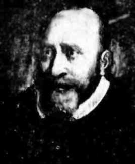 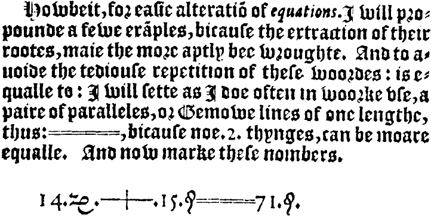
That book also coined (one of the) strangest word(s) in the dictionary: “zenzizenzizenzike” indicates the 8th power of a number. Of all the words in the big dictionary, it’s the one with the most “z’s” in it — you can almost fall asleep reading it! (In his book, the zenzizenzizenzike straddles the two pages you see here...)
| Zenzizenzizenzike | |||
| n2 | zenzike | z. | the square of a number |
| n4 | zenzizenzike | z.z. | the fourth power of a number |
| n8 | zenzizenzizenzike | z.z.z. | the eighth power of a number |
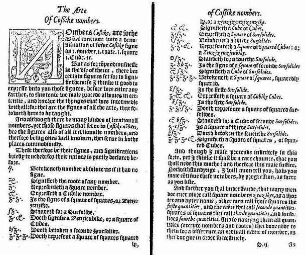
Recorde’s equal sign didn’t prevail easily. The alternatives “//”, the bizarre symbol “[;”, heavily promoted by the German printers, “||”, “][”, “.æqus.”, the Latin word for “equal”, and the “→” arrow remained in use for another generation. Imagine how Einstein’s formula “E=mc²” could have been written! Or how computer code would look with the word “.æqus.” scattered across it… Still, in Shakespeare’s age, Recorde’s equal sign had been adopted.
| Origin of the equal sign (=) | ||
| winner |
E=mc2
(derived from E======mc2) |
|
| losers | E//mc2 | |
| E[;mc2 | ||
| E||mc2 | ||
| E][mc2 | ||
| E.æqus.mc2 | ||
| E→mc2 | ||
Other punctuation marks — the question mark (?), the exclamation point (!), the quotation marks (“ and ”), the dash (–) and the apostrophe (’) — were a later development, they appeared in the 16th to 18th century. The slash (/) was replaced by the comma as we know it because it resembled the (italic) “l” (el) too much!
The quotation marks “ and ”) were initially printed as two inverted comma’s — it was a matter of economics in an era when all symbols were designed as metal shapes. Actual new symbols didn’t appear until the end of the 18th century with the Bodoni font!
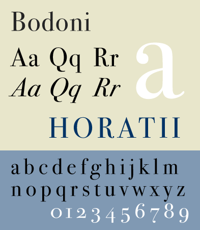
The French and Spanish language use specific punctuation marks (“«” and “»”), not the double and inverted double comma’s. They’re called “angled quotation marks” or “guillemets” after their 16th-century inventor Guillaume Le Bé.
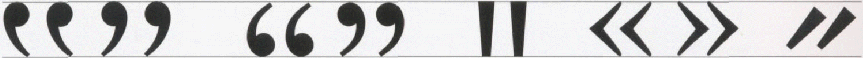
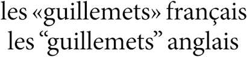
When it comes to quotation marks, the traditions can vary per country to this day! In French and Italian, the guillemets always point out («word»), but in German they more frequently point in (»word«). In English and Spanish, common usage of quotation marks is ‘this’ and “this”. In German, it is ‚diese‘ and „diese“ etc.
The question mark (?) goes back to the 16th century, the exclamation point (!) appeared in the 16th century and evolved until the 18th century. Their shapes were derived from Latin concepts: “qauestio” means interrogation in Latin, “io” was the popular Latin joyful cry. The question mark started as an abbreviation of “qauestio”, then became a ligature of an “o” with a “q” above it. The same thing happened to the exclamation mark: “io” became a ligature with the “i” written above the “o”.
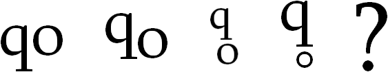
Which languages can OCR software read? — The history of the alphabets – Latin alphabet — Latin punctuation — Greek alphabet — Cyrillic (Russian) alphabet — Hebrew alphabet — Arabic alphabet — Let’s go East – Chinese alphabet — Japanese alphabet — Korean alphabet — Asian punctuation
Home page — Intro — Scanners — Images — History — OCR — Languages — Accuracy — Output — BCR — Pen scanners — Sitemap — Search — Feedback – Contact